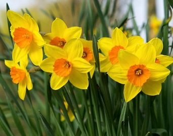
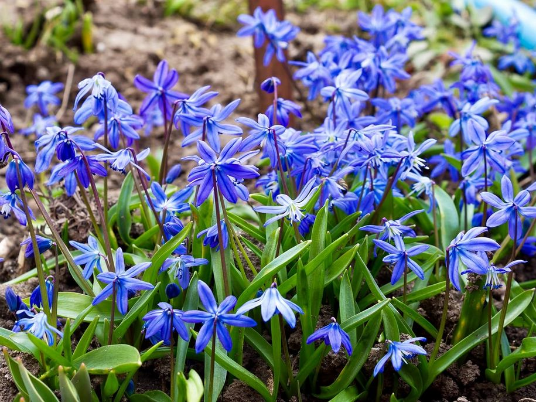
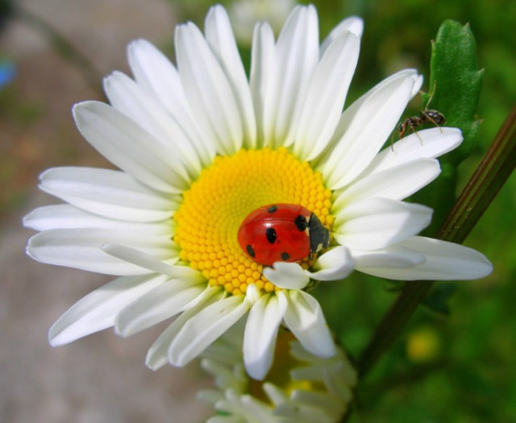
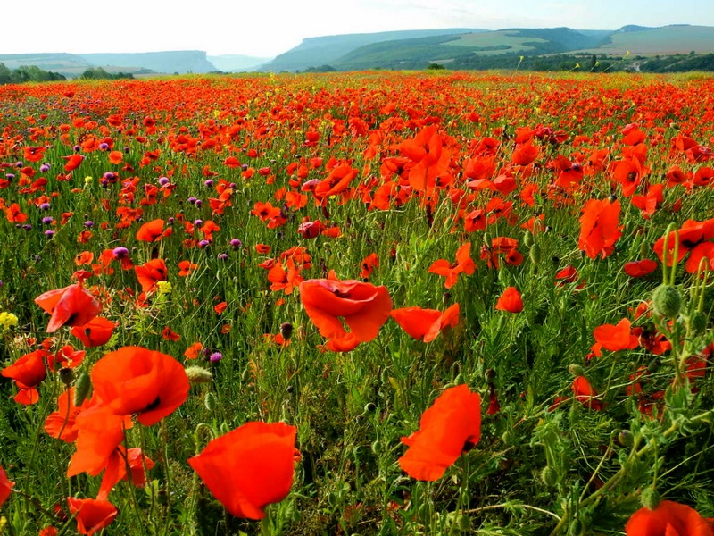
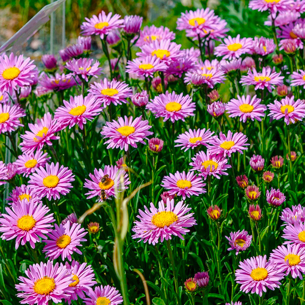
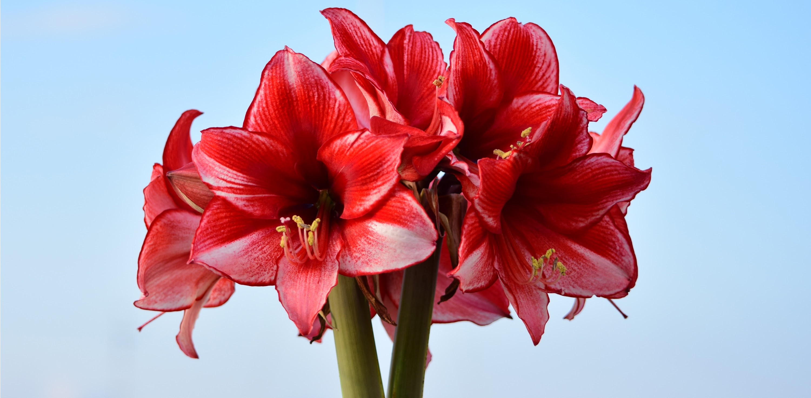

🌷 ВЕСНА
Весна - час пробудження природи. Перші квіти з'являються з-під снігу.

Тюльпани
Ніжні квіти різних кольорів. Розквітають у квітні-травні.
🌱 Цікаво: У Голландії є цілі поля тюльпанів!

Нарциси
Запашні квіти з жовтою серединкою. Символ весни.
🌱 Цікаво: Нарциси - одні з перших весняних квітів.

Проліски
Найперші квіти, ростуть прямо з-під снігу.
🌱 Цікаво: Проліски занесені до Червоної книги!
🌻 ЛІТО
Літо - буйство фарб та ароматів. Найбільше квітів саме влітку.

Соняшники
Великі жовті квіти, повертаються до сонця.
🌱 Цікаво: Соняшник може вирости до 3 метрів!

Ромашки
Білі пелюстки з жовтою серединкою. Польові квіти.
🌱 Цікаво: На ромашках гадають "любить - не любить".

Маки
Яскраво-червоні квіти, що прикрашають поля.
🌱 Цікаво: Маки цвітуть всього 2-3 дні.
🍁 ОСІНЬ
Осінь дарує теплі барви та пізні квіти.

Айстри
Осінні зірочки, квітнуть до морозів.
🌱 Цікаво: Айстра означає "зірка" по-грецьки.

Хризантеми
Королеви осені. Пишні квіти різних кольорів.
🌱 Цікаво: В Японії є свято хризантем.
❄️ ЗИМА
Взимку квіти ростуть в дома або в оранжереях.

Амариліс
Великі яскраві квіти. Часто дарують на свята.
🌱 Цікаво: Амариліс квітне в грудні-січні.

Різдвяна зірка
Пуансетія. Червоні приквітки, схожі на зірки.
🌱 Цікаво: Це символ Різдва в багатьох країнах.